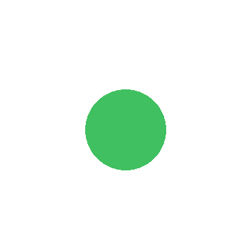
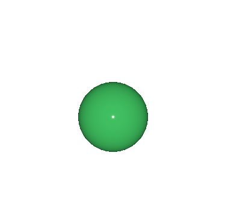
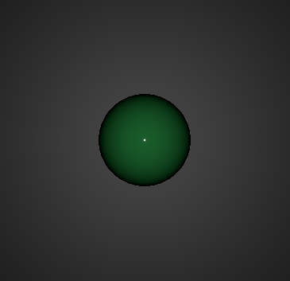

PointLight QML Type
Defines a point light in the scene. More...
| Import Statement: | import QtQuick3D |
| Inherits: |
Properties
- constantFade : real
- linearFade : real
- quadraticFade : real
Detailed Description
The point light can be described as a sphere, emitting light with equal strength in all directions from the center of the light. This is similar to the way a light bulb emits light.
Rotating or scaling a point light does not have any effect. Moving a point light will change the position from where the light is emitted.
By default, a point light intensity diminishes according to inverse-square-law. However, the fade-off (and range) can be controlled with the constantFade, linearFade, and quadraticFade properties. Light attenuation is calculated using the formula: constantFade + distance * (linearFade * 0.01) + distance^2 * (quadraticFade * 0.0001)
A simple example: shading a sphere in three different ways
Take a scene containing a sphere in front of a scaled up rectangle in the background. The default base color of the PrincipledMaterial of the rectangle is white.
Without any lights and disabling light-related shading for the two meshes, we get the following:
import QtQuick import QtQuick3D View3D { anchors.fill: parent PerspectiveCamera { z: 600 } Model { source: "#Rectangle" scale: Qt.vector3d(10, 10, 10) z: -100 materials: PrincipledMaterial { lighting: PrincipledMaterial.NoLighting } } Model { source: "#Sphere" scale: Qt.vector3d(2, 2, 2) materials: PrincipledMaterial { lighting: PrincipledMaterial.NoLighting baseColor: "#40c060" roughness: 0.1 } } }

Adding a directional light, emitting down the Z axis by default, leads to the following:
import QtQuick import QtQuick3D View3D { anchors.fill: parent PerspectiveCamera { z: 600 } DirectionalLight { } Model { source: "#Rectangle" scale: Qt.vector3d(10, 10, 10) z: -100 materials: PrincipledMaterial { } } Model { source: "#Sphere" scale: Qt.vector3d(2, 2, 2) materials: PrincipledMaterial { baseColor: "#40c060" roughness: 0.1 } } }

What if we now replace DirectionalLight with:
PointLight { z: 300 }
The white colored PointLight here is moved on the Z axis so that it is halfway between the camera and the center of the scene. Unlike DirectionalLight, the rotation of the PointLight does not matter, whereas its position is significant. The diminishing intensity is visible here, especially on the rectangle mesh in the background.

For more usage examples, see Qt Quick 3D - Lights Example.
See also DirectionalLight and SpotLight.
Property Documentation
constantFade : real |
This property is constant factor of the attenuation term of the light. The default value is 1.0.
linearFade : real |
This property increases the rate at which the lighting effect dims the light in proportion to the distance to the light. The default value is 0.0, meaning the light doesn't have linear fade. The value used here is multiplied by 0.01 before being used to calculate light attenuation.
quadraticFade : real |
This property increases the rate at which the lighting effect dims the light in proportion to the inverse square law. The default value is 1.0 meaning the point light fade exactly follows the inverse square law i.e. when distance to an object doubles the light intensity decreases to 1/4th. The value used here is multiplied by 0.0001 before being used to calculate light attenuation.